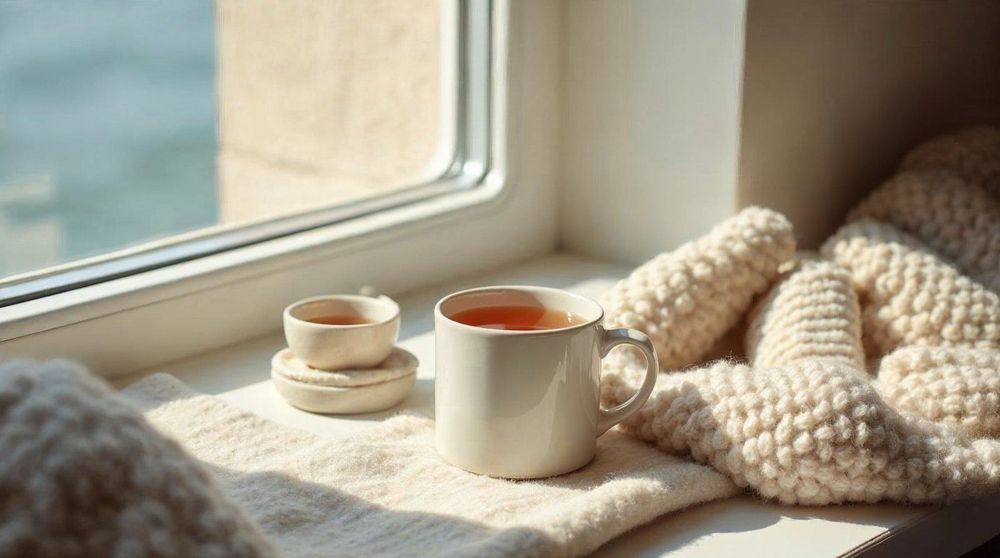
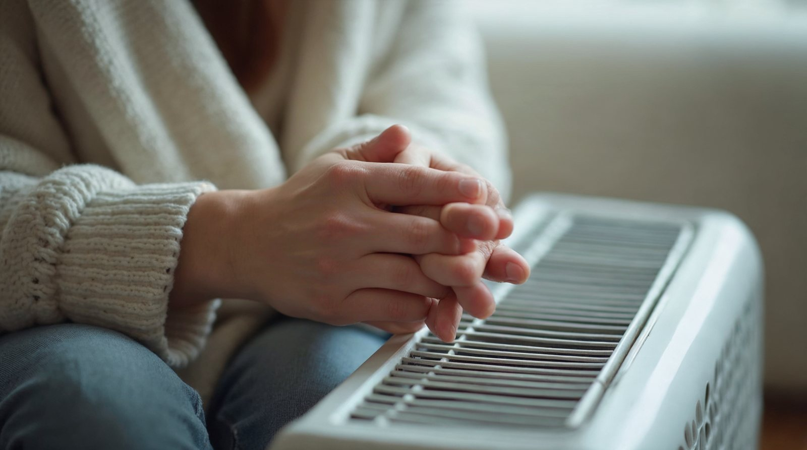
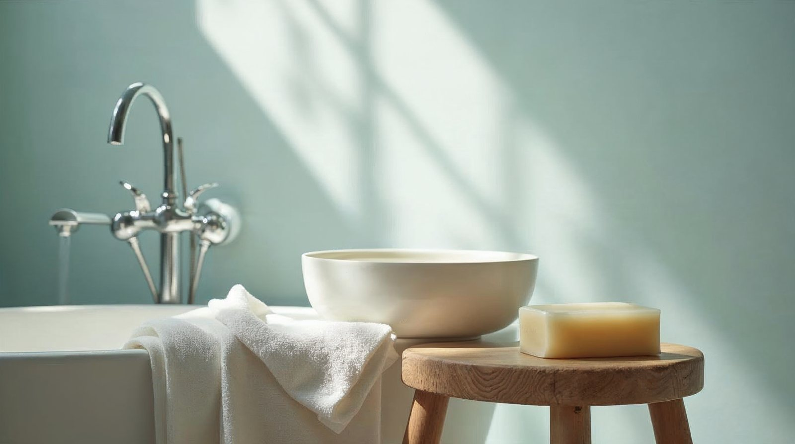

이종호 한의사 감수좋은꿈참사랑한의원 대표원장 (한의사 면허번호 19769)발행 2026-11-22 · 수정 2026-11-26
이 글의 차례
- 왜 이런 불편이 생길 수 있나요
- 먼저 이렇게 여쭙니다
- 일상에서 먼저 해 볼 수 있는 것
- 한의원에서 함께 살필 수 있는 경우
- 손발이 찬 것과 비슷한 다른 불편은 어떻게 구분하나요?
- 왜 여성분들이 겨울에 더 시리다고 하실까요?
- 이런 상황에서 특히 시려집니다
- 스스로 점검해 보세요
- 첫 방문 때는 이렇게 진행합니다
- 집에서 따뜻하게 지내실 때 기억할 점
- 발이 차면 왜 잠들기가 어려울까요?
- 식사에서는 무엇을 챙겨 보면 좋을까요?
- 옷차림과 실내 환경도 함께 봐 주세요
- 얼마나 지켜보고 다시 이야기하면 될까요?
- 한의학에서는 손발 냉감을 어떻게 바라보나요?
- 출근부터 잠들 때까지, 하루 흐름으로 정리해 보면
- 함께 오는 불편도 같이 말씀해 주세요
- 겨울에 해 볼 만한 가벼운 운동
- 이렇게 기록해 오시면 상담이 쉬워집니다
- 원장으로서 드리고 싶은 말
- 이런 증상은 먼저 확인이 필요합니다
겨울에 손발이 유난히 차다면 날씨 탓만으로 넘기기보다 잠, 식사량, 활동량, 생리 주기와 함께 살펴보는 것이 좋습니다. 이불 속에서도 발이 시려 한참 뒤척이거나, 실내에서도 손끝이 차가워 일에 집중하기 어렵다는 분이 많습니다. 한의원에서는 손발의 온도와 함께 생활 전체의 리듬을 여쭙고, 다른 원인이 의심되는 신호가 있으면 병원 확인을 먼저 권합니다.
왜 이런 불편이 생길 수 있나요
- 추위에 노출되면 몸이 중심부의 온도를 지키려고 손발 쪽 혈관을 좁히는 반응이 생길 수 있습니다.
- 식사량이 적거나 끼니를 거르면 몸이 열을 만드는 데 쓸 에너지가 부족해질 수 있습니다.
- 오래 앉아 있거나 활동량이 적으면 다리 쪽 순환이 느려져 발이 더 차게 느껴지는 경우가 있습니다.
- 빈혈이나 갑상선 기능 변화처럼 확인이 필요한 원인이 숨어 있는 경우도 있습니다. 한의학에서는 몸의 온기와 기운의 흐름, 소화 상태도 함께 살핍니다.

먼저 이렇게 여쭙니다
- 손발이 차가운 것은 언제부터이고, 하루 중 어느 때 가장 심한가요?
- 손가락이나 발가락 색이 하얗게 또는 파랗게 변하나요?
- 발이 차서 잠드는 데 시간이 걸리나요?
- 식사량, 체중 변화, 어지럼, 피로가 함께 있나요?
- 생리 전후로 손발 냉감이 더 심해지나요?

일상에서 먼저 해 볼 수 있는 것
- 잠들기 30분 전 미지근한 물에 발을 10분쯤 담그거나 얇은 수면 양말 신기
- 오래 앉아 있다면 한 시간에 한 번 일어나 발목을 돌리고 제자리 걷기
- 아침을 거르지 않고 국이나 죽처럼 데운 음식 챙기기
- 차가운 음료와 아이스커피는 줄이고 따뜻한 물로 바꿔 보기
- 외출할 때 장갑과 목도리로 손목, 발목, 목을 덮기

한의원에서 함께 살필 수 있는 경우
- 생리 전후로 손발이 더 차고 아랫배까지 서늘한 경우, 주기와 체온 변화를 함께 살핍니다.
- 손발이 차면서 피로와 얕은 잠이 함께 오는 경우, 잠의 리듬과 긴장 상태를 함께 살핍니다.
- 소화가 더디고 식사량이 적은 경우, 식사 습관과 몸의 온기를 함께 살핍니다.
좋은꿈참사랑한의원에서는 먼저 손발이 언제, 어떻게 차가운지 충분히 듣고, 진맥을 기본으로 하고 필요하다고 판단될 때 설진·복진을 더해 몸 상태를 살핀 뒤 침이나 한약 상담 등 맞는 방법을 함께 정합니다. 귀가 전에는 집에서 지켜볼 점과 다음에 확인할 일을 알려 드립니다.
손발이 찬 것과 비슷한 다른 불편은 어떻게 구분하나요?
손발이 차다는 말 안에는 여러 모양이 섞여 있습니다. 만졌을 때 실제로 차가운지, 남이 만지면 따뜻한데 본인만 시린지부터 나누어 봅니다. 두 경우는 살펴볼 방향이 조금 다릅니다.
손끝이 하얗게 변했다가 파랗게, 다시 붉게 돌아오는 모습이 추위나 긴장에 반복된다면 혈관이 갑자기 좁아지는 반응일 수 있어 병원 검사를 먼저 권합니다. 저림과 감각 둔해짐이 함께 있으면 목이나 손목의 신경이 눌리는 문제와도 구분해야 합니다.
늘 피곤하고 숨이 차며 얼굴이 창백하다면 빈혈을, 추위를 부쩍 타면서 체중이 늘고 변비가 생겼다면 갑상선 기능을 확인해 보시도록 말씀드립니다. 이런 검사가 정상이라고 들은 뒤에도 냉감이 이어진다면 생활 리듬과 몸의 온기를 함께 살펴볼 수 있습니다.
왜 여성분들이 겨울에 더 시리다고 하실까요?
진료실에서 손발 냉감을 이야기하시는 분 가운데 여성분이 많습니다. 근육량이 상대적으로 적으면 몸이 스스로 만드는 열이 적어 추위에 손발 쪽 혈관을 먼저 좁히기 쉽습니다.
생리 주기에 따라 체온이 조금씩 오르내리는 것도 영향을 줍니다. 생리 직전이나 생리 중에 손발이 더 차고 아랫배까지 서늘하다는 분이 있는데, 이런 흐름은 달력에 적어 보면 눈에 들어옵니다.
다이어트로 식사량을 갑자기 줄였거나 아침을 자주 거르는 생활도 겹칩니다. 몸은 열을 만들 재료가 부족하면 중심부를 먼저 지키려 하기 때문에 손끝과 발끝이 가장 먼저 시려집니다.
이런 상황에서 특히 시려집니다
예를 들어 출근길 버스를 기다리며 서 있다가 사무실에 들어왔는데 한참이 지나도 손끝이 녹지 않는 경우가 있습니다. 바깥 추위보다 실내에서 오래 가만히 앉아 있는 시간이 더 길어 발이 계속 차게 남는 것입니다.
또 예를 들어 저녁을 가볍게 먹고 씻은 뒤 이불에 들어갔는데 발이 시려 한 시간 넘게 뒤척이는 경우도 있습니다. 샤워 뒤 발을 말리지 않고 바로 맨발로 다니면 열이 빠르게 빠져나가 더 차게 느껴질 수 있습니다.
긴장을 많이 하는 회의나 발표 전에 손이 갑자기 차가워지고 땀이 나는 분도 있습니다. 이때는 추위보다 긴장이 손끝 혈관을 좁히는 쪽이라, 호흡과 긴장 상태를 함께 여쭙습니다.
스스로 점검해 보세요
아래 항목 가운데 해당하는 것이 몇 개인지 세어 보시면 진료 때 이야기를 정리하기 쉽습니다.
- 여름에도 에어컨 바람 아래에서 손발이 먼저 시리다
- 남이 손을 잡으면 "손이 왜 이렇게 차요"라는 말을 자주 듣는다
- 발이 차서 잠들기까지 30분 넘게 걸리는 날이 일주일에 사흘 이상이다
- 아침을 거르거나 하루 두 끼 이하로 먹는 날이 많다
- 하루 대부분을 앉아서 보내고 걷는 시간이 30분이 안 된다
- 생리 전후로 손발과 아랫배가 더 차다
- 찬 음료나 아이스커피를 하루 두 잔 이상 마신다
세 개 이상이라면 생활 리듬에서 손볼 부분이 있다는 뜻일 수 있습니다. 개수보다 어떤 항목이 겹치는지를 보시면 좋습니다.
첫 방문 때는 이렇게 진행합니다
처음 오시면 언제부터, 어떤 때 손발이 차가운지 충분히 듣습니다. 생리 주기와 식사량, 잠, 최근 체중 변화도 함께 여쭙니다. 병원 검사 결과가 있으면 그 내용을 먼저 확인합니다.
진맥은 모든 분께 기본으로 합니다. 맥의 힘과 속도를 보고, 필요하다고 판단되면 혀의 색과 배의 온기를 살피는 설진·복진을 더합니다. 손발을 직접 만져 좌우 차이와 색도 함께 봅니다.
그다음 침이나 한약 상담, 온열 물리치료 가운데 지금 상태에 맞는 방법을 함께 정합니다. 복용 중인 약이 있으면 이름을 먼저 확인하고, 한약은 겹치는 부분이 없는지 살핀 뒤 정합니다.
집에서 따뜻하게 지내실 때 기억할 점
발을 데울 때는 너무 뜨거운 물보다 손을 넣었을 때 기분 좋게 따뜻한 정도가 알맞습니다. 감각이 둔한 분은 화상을 입어도 늦게 알아차릴 수 있어 물 온도를 손으로 먼저 확인해 주세요.
수면 양말은 발목을 조이지 않는 것을 고르시고, 너무 두꺼워 땀이 차면 오히려 식을 수 있습니다. 전기장판은 잠들기 전에 이불을 데우는 용도로 쓰고 잠든 뒤에는 끄거나 낮게 두시길 권합니다.
몸을 움직이는 것도 열을 만드는 방법입니다. 가까운 거리는 걸어서 다니거나, 앉아서 발뒤꿈치를 들었다 내리는 동작을 스무 번씩 해 보세요. 종아리 근육이 움직이면 다리 쪽 순환에 도움이 될 수 있습니다.
발이 차면 왜 잠들기가 어려울까요?
사람은 잠들 무렵 몸 중심의 열을 손발로 내보내면서 체온이 살짝 내려가야 졸음이 깊어집니다. 그런데 손발 혈관이 좁아져 있으면 열이 잘 빠져나가지 못해 잠드는 과정이 늦어질 수 있습니다.
그래서 발이 찬 분들은 이불 속에서 발을 비비거나 웅크린 채 한참을 보내게 됩니다. 잠이 늦어지면 다음 날 피로가 쌓이고, 피곤한 몸은 다시 추위를 더 타게 되어 돌고 도는 흐름이 생기기 쉽습니다.
잠자리에 들기 전 발을 미지근하게 데우는 것은 이 열의 흐름을 도와주려는 방법입니다. 뜨겁게 오래 데우기보다 10분 정도 데운 뒤 물기를 잘 닦고 바로 양말을 신는 순서가 중요합니다.
식사에서는 무엇을 챙겨 보면 좋을까요?
먼저 끼니를 거르지 않는 것이 시작입니다. 몸은 음식을 소화하는 과정에서도 열을 만들기 때문에, 아침을 조금이라도 드시면 오전 내내 손끝이 덜 시리다는 이야기를 듣곤 합니다.
단백질이 너무 적지 않은지도 살펴보세요. 밥과 빵 위주로 간단히 드시는 분이라면 달걀, 두부, 생선, 살코기 가운데 한 가지를 끼니마다 곁들여 보는 정도로 충분합니다.
생강이나 계피 같은 따뜻한 성질의 재료를 차로 즐기시는 분도 있습니다. 다만 위가 예민하거나 속쓰림이 있는 분은 진하게 드시면 불편할 수 있어 연하게, 식후에 드시길 권합니다. 복용 중인 약이 있다면 많이 드시기 전에 한번 여쭤 주세요.
옷차림과 실내 환경도 함께 봐 주세요
목, 손목, 발목처럼 피부가 얇고 혈관이 가까운 곳을 덮으면 같은 두께의 옷이라도 훨씬 따뜻하게 느껴집니다. 얇은 옷을 여러 겹 입으면 실내외 온도 차이에 맞춰 벗고 입기도 쉽습니다.
사무실 책상 아래로 찬바람이 들어오거나 바닥이 차갑다면 발 받침이나 작은 매트를 깔아 보세요. 슬리퍼보다 뒤꿈치까지 감싸는 실내화가 발을 덜 식게 합니다.
꽉 끼는 신발이나 조이는 양말, 몸에 붙는 바지는 다리 쪽 순환을 방해할 수 있습니다. 겨울에는 한 치수 여유 있는 신발에 따뜻한 양말을 신는 편을 권합니다.
얼마나 지켜보고 다시 이야기하면 될까요?
생활을 조정한 뒤 몸의 반응을 보려면 적어도 2~3주는 같은 방식으로 지내 보시는 것이 좋습니다. 하루 이틀 만에 판단하면 그날의 날씨나 컨디션에 따라 흔들리기 쉽습니다.
생리 주기가 있는 분은 한 주기를 온전히 지나 보시면 주기와 냉감의 관계가 더 잘 보입니다. 그 사이 손가락 색이 변하거나 한쪽만 저린 일이 생기면 기다리지 말고 병원을 먼저 찾아 주세요.
한의학에서는 손발 냉감을 어떻게 바라보나요?
한의학에서는 손발이 찬 것을 따로 떼어 보지 않고, 몸 전체의 온기가 어떻게 만들어지고 어디로 흘러가는지를 함께 봅니다. 열을 만드는 힘이 부족한 쪽인지, 열은 있는데 손발까지 잘 가지 못하는 쪽인지를 나누어 생각합니다.
예를 들어 쉽게 지치고 목소리에 힘이 없으며 소화가 더딘 분은 몸이 온기를 넉넉히 만들지 못하는 쪽에 가까울 수 있습니다. 반대로 긴장하면 손이 차가워지고 어깨가 늘 뭉쳐 있는 분은 흐름이 막히는 쪽을 먼저 살핍니다.
이 구분은 진맥과 문진, 필요하면 설진·복진을 함께 보며 판단합니다. 같은 냉감이라도 방향에 따라 침의 자리나 한약의 구성이 달라질 수 있어 처음 이야기를 충분히 듣는 시간을 중요하게 생각합니다.
출근부터 잠들 때까지, 하루 흐름으로 정리해 보면
아침에는 일어나서 따뜻한 물 한 잔과 간단한 식사로 몸을 깨워 주세요. 집을 나설 때 장갑과 목도리를 챙기고, 버스나 지하철을 기다리는 동안 발가락을 꼼지락거리며 움직여 보세요.
낮에는 한 시간에 한 번 일어나 물을 뜨러 가거나 복도를 걷는 것만으로도 다리가 움직입니다. 점심 뒤 10분 정도 바깥을 걸으면 햇빛도 쬐고 몸도 데워집니다.
저녁에는 너무 늦지 않게 식사하고, 잠들기 30분 전 발을 데운 뒤 양말을 신고 누워 보세요. 이 흐름을 일주일만 지켜 보셔도 어느 시간대에 가장 시린지가 또렷해집니다.
함께 오는 불편도 같이 말씀해 주세요
손발 냉감은 혼자 오기보다 다른 불편과 함께 오는 경우가 많습니다. 생리통이 심해졌다거나, 오후만 되면 다리가 붓고 무겁다거나, 소화가 더디고 아랫배에 가스가 차는 일이 있다면 함께 알려 주세요.
어깨와 목이 늘 뻐근하거나 두통이 잦은 분도 있습니다. 긴장이 오래 이어지면 손끝까지 가는 흐름이 막히기 쉬워, 몸의 뭉친 곳을 함께 살피는 것이 실마리가 되기도 합니다.
사소해 보이는 불편이라도 메모해 두시면 진료 시간 안에 빠뜨리지 않고 이야기할 수 있습니다. 어떤 것이 먼저 생겼고 어떤 것이 뒤따랐는지 순서까지 적어 두시면 더 도움이 됩니다.
겨울에 해 볼 만한 가벼운 운동
추운 날에는 바깥 운동이 부담스러우니 집 안에서 할 수 있는 동작부터 시작해 보세요. 의자를 잡고 서서 발뒤꿈치를 천천히 들었다 내리기를 스무 번, 제자리에서 무릎을 번갈아 들어 올리며 걷기를 3분 정도 하면 몸이 금세 데워집니다.
손이 시릴 때는 주먹을 꽉 쥐었다가 손가락을 활짝 펴는 동작을 열 번 반복해 보세요. 어깨를 크게 돌리는 동작을 곁들이면 팔 쪽 흐름에도 도움이 될 수 있습니다.
운동은 숨이 조금 차고 몸이 따뜻해지는 정도면 충분합니다. 땀이 많이 난 뒤 바로 식으면 오히려 더 추워지니 마른 수건으로 닦고 옷을 갈아입어 주세요.

이렇게 기록해 오시면 상담이 쉬워집니다
- 손발이 특히 찼던 시간과 장소(출근길, 사무실, 잠자리 등)
- 손가락·발가락 색이 변한 적이 있다면 그 모습을 찍은 사진
- 최근 한 달의 생리 시작일과 그 무렵의 냉감 정도
- 복용 중인 약과 영양제, 최근 건강검진 결과지
원장으로서 드리고 싶은 말
손발이 찬 것은 오래된 체질이라 어쩔 수 없다고 여기시는 분이 많습니다. 하지만 잠, 식사, 움직임을 조금씩 바꾸면서 몸이 어떻게 반응하는지 지켜보면 생각보다 손볼 곳이 보입니다.
한 번에 모든 것을 바꾸려 하기보다 이번 겨울에는 아침 한 끼와 잠들기 전 발 데우기, 이 두 가지부터 시작해 보시길 권합니다. 기록을 들고 오시면 그 흐름을 함께 보며 다음 단계를 정하겠습니다.
손발이 따뜻해지는 것만을 목표로 삼기보다 잠이 조금 편해졌는지, 오후 피로가 덜한지처럼 하루 전체의 변화를 함께 살펴보세요. 그런 작은 변화가 다음 진료에서 방향을 잡는 데 가장 좋은 단서가 됩니다.
이런 증상은 먼저 확인이 필요합니다
- 한쪽 손이나 발만 유난히 차갑고 저린 경우, 특히 갑자기 차갑고 창백해지면서 아픈 경우
- 갑자기 한쪽 팔다리에 힘이 빠지거나 말이 어눌해지는 경우
이런 신호가 있으면 한의원보다 가까운 병원이나 응급실을 먼저 찾으세요.

여쭙는 것
- 손발이 차가운 것은 언제부터이고, 하루 중 어느 때 가장 심한가요?
- 손가락이나 발가락 색이 하얗게 또는 파랗게 변하나요?
- 발이 차서 잠드는 데 시간이 걸리나요?
생활에서 해 볼 것
- 잠들기 30분 전 미지근한 물에 발을 10분쯤 담그거나 얇은 수면 양말 신기
- 오래 앉아 있다면 한 시간에 한 번 일어나 발목을 돌리고 제자리 걷기
- 아침을 거르지 않고 국이나 죽처럼 데운 음식 챙기기
한의원에서 함께 살필 것
- 생리 전후로 손발이 더 차고 아랫배까지 서늘한 경우, 주기와 체온 변화를 함께 살핍…
- 손발이 차면서 피로와 얕은 잠이 함께 오는 경우, 잠의 리듬과 긴장 상태를 함께 살…
- 소화가 더디고 식사량이 적은 경우, 식사 습관과 몸의 온기를 함께 살핍니다.
먼저 확인이 필요한 신호
- 한쪽 손이나 발만 유난히 차갑고 저린 경우, 특히 갑자기 차갑고 창백해지면서 아픈 경우
- 갑자기 한쪽 팔다리에 힘이 빠지거나 말이 어눌해지는 경우
한눈에 보는 표
| 구분 | 핵심 |
|---|---|
| 여쭙는 것 | 손발이 차가운 것은 언제부터이고, 하루 중 어느 때 가장 심한가요? 손가락이나 발가락 색이 하얗게 또는 파랗게 변하나요? |
| 생활에서 해 볼 것 | 잠들기 30분 전 미지근한 물에 발을 10분쯤 담그거나 얇은 수면 양말 신기 오래 앉아 있다면 한 시간에 한 번 일어나 발목을 돌리고 제자리 걷기 |
| 한의원에서 함께 살필 것 | 생리 전후로 손발이 더 차고 아랫배까지 서늘한 경우, 주기와 체온 변화를 함께 살핍니다. 손발이 차면서 피로와 얕은 잠이 함께 오는 경우, 잠의 리듬과 긴장 상태를 함께 살핍니다. |
| 먼저 확인이 필요한 신호 | 한쪽 손이나 발만 유난히 차갑고 저린 경우, 특히 갑자기 차갑고 창백해지면서 아픈 경우 갑자기 한쪽 팔다리에 힘이 빠지거나 말이 어눌해지는 경우 |
자주 묻는 질문
손발이 찬 것은 한의원에서 어떻게 보나요?
증상이 나타나는 시간과 상황, 잠과 식사, 생리 주기를 함께 여쭙고 생활 속 리듬을 살핍니다. 진맥을 기본으로 하고 필요하다고 판단될 때 설진·복진을 더해 몸 상태를 확인합니다.
따뜻한 음식만 먹으면 되나요?
한 가지 음식으로 정해지지 않습니다. 식사 시간과 양, 활동량, 잠을 함께 살피는 것이 좋습니다.
핫팩을 오래 대고 있어도 괜찮나요?
같은 자리에 오래 대면 저온 화상이 생길 수 있습니다. 옷 위로 짧게 쓰고, 감각이 둔한 곳에는 피해 주세요.
복용 중인 약이 있어도 괜찮을까요?
복용 중인 약은 임의로 바꾸거나 중단하지 말고 처방한 의사와 상의하세요. 진료 때 약 이름을 알려 주시면 함께 확인합니다.
손발이 찬 게 빈혈 때문인지 어떻게 알 수 있나요?
증상만으로 구분하기 어렵습니다. 피로와 숨참, 어지럼이 함께 있으면 병원에서 혈액검사를 먼저 받아 보시길 권합니다.
좋은꿈참사랑한의원은 재진 때 지난번 이야기부터 이어서 여쭙니다. 진료시간과 예약은 오시는 길에서 확인하세요.
어디서 상담받을 수 있나요?
좋은꿈참사랑한의원은 서울 동작구 만양로2길 2 신성빌딩 3층·5층(서울 동작구 상도동, 7호선 상도역 3번 출구 근처)에 있습니다. 한의사 3명(이종호 대표원장, 조영기 수석진료원장, 정원영 진료원장)이 진료합니다. 진료시간은 평일 09:30~20:00(점심 13:00~14:00), 토·일·공휴일 09:30~15:00이며, 방문 전 전화로 확인을 권합니다. 예약은 네이버 예약, 카카오톡 상담, 전화 02-815-7510로 받습니다.
이 글은 일반적인 건강 정보이며 개인의 진단이나 치료를 대신하지 않습니다. 증상이 있거나 복용 중인 약이 있다면 진료를 통해 확인하세요. 치료 효과는 개인마다 다를 수 있습니다.
작성 기준: 일반적으로 알려져 있는 건강 정보를 참고해 정리했습니다(대표원장 감수). 증상 기록은 1~2주 동안 하루 1회, 비슷한 시간에 적어 오시면 지난 상태와 비교하기 쉽습니다.